[1] "white" "aliceblue" "antiquewhite" "antiquewhite1"
[5] "antiquewhite2" "antiquewhite3" "antiquewhite4" "aquamarine"
[9] "aquamarine1" "aquamarine2" "aquamarine3" "aquamarine4"
Monetary Policy Visualization
Effects of Monetary Policy
Dr. Matthias Schnetzer
November 9, 2026
Fiscal policy
Effects of fiscal policy on distribution
Studies typically find that inequality increases in periods of restrictive fiscal policy:
- Ball et al. (2013): 17 OECD countries from 1978 to 2009
- Agnello/Sousa (2014): 18 industrialized countries from 1978 to 2009
- Woo et al. (2016): 17 OECD countries from 1980 to 2010
- Heimberger (2020): 17 OECD countries from 1978 to 2013
Methodology: Impulse response functions (IRF) from local projections as proposed by Jordà (2005).
Fiscal consolidation has dampened growth in Europe
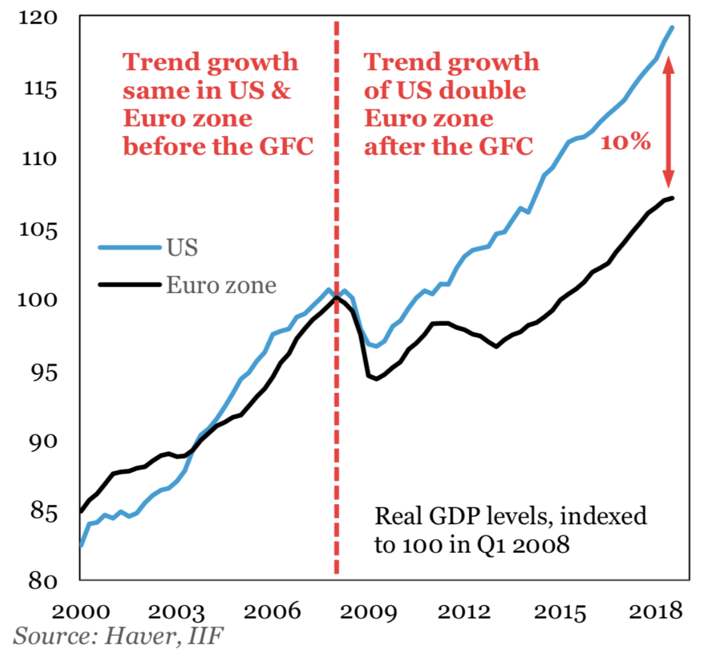
Fiscal consolidation increases inequality
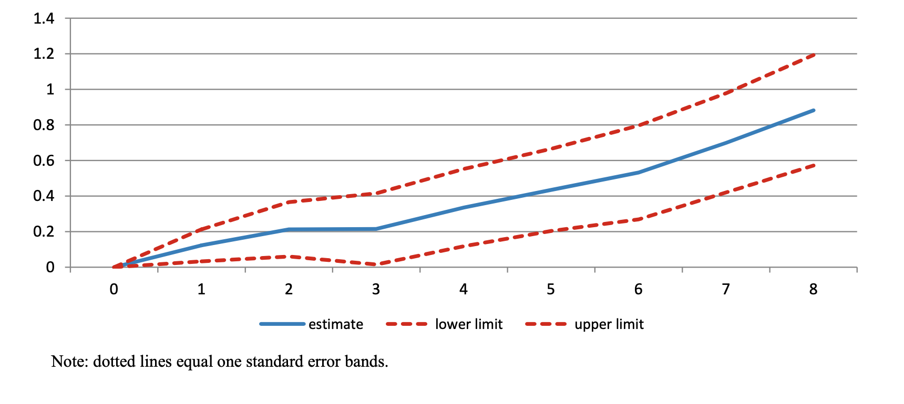
Fiscal consolidation: Spending versus taxes
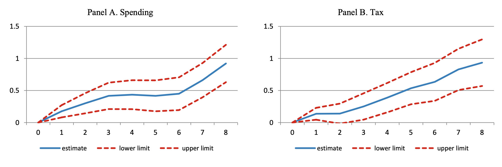
Larger effect for spending-based consolidation
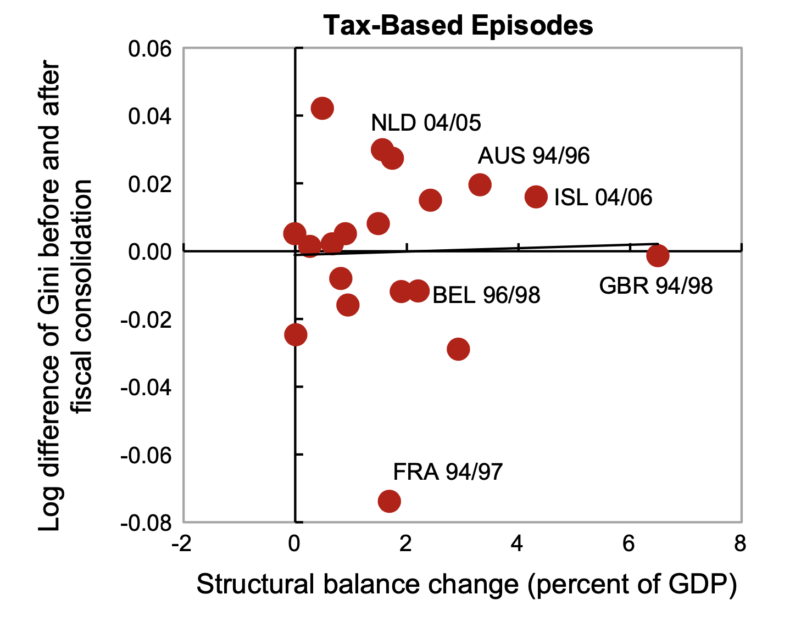
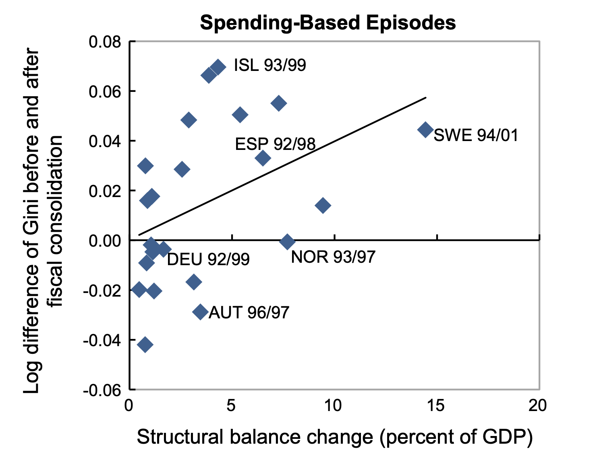
Fiscal consolidation increases (long-term) unemployment
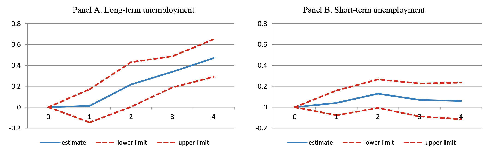
Monetary policy
Effects of contractionary monetary policy shocks
Study by Furceri et al. (2018):
- (unanticipated) changes in short-term interest rates for a panel of 32 countries from 1990 to 2013
- contractionary monetary policy shocks reduce output and (mostly) inflation, while increasing unemployment
- contractionary monetary policy shocks increase income inequality, expansionary monetary policy reduces inequality
- effect is asymmetric: tightening of monetary policy raises inequality more than easing lowers it
Effect of monetary policy on output, unemployment and inflation
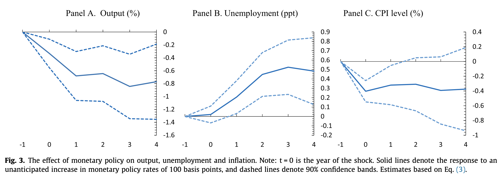
Macroeconomic effects of monetary policy
- Miranda-Agrippino/Ricco (2021) use high-frequency identified shocks and find that contractionary monetary policy shocks cause persistent declines in output and prices, with effects building up slowly over 1-2 years
- Doko Tchatoka/Haque (2024) revisit the macroeconomic effects of monetary policy shocks and show that the magnitude and persistence of output and price responses are sensitive to the identification strategy and sample period used
- across studies, contractionary shocks are generally found to reduce output and employment in the short-to-medium run, with inflation responding only gradually (the “price puzzle” in some specifications)
Effect of monetary policy shocks on inequality
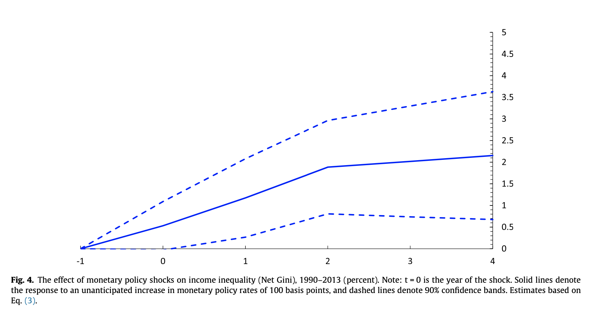
Empirical evidence in single countries is ambiguous
- Anderesen et al. (2023) find for Denmark (1987-2014) that expansionary monetary policy (reduction of rates) leads to more inequality.
- Mumtaz/Theophilopoulou (2017) suggest for the United Kingdom (1969-2012) that contractionary monetary policy resulted in increasing income inequality.
- Coibion et al. (2017) argue that contractionary monetary policy shocks boosted inequality in the United States since 1980.
- McKay/Wolf (2023) find that monetary policy has a relatively uniform incidence across households in the United States.
Unconventional monetary policy and inequality
Study by Çerçil/Aksaray (2025) on asset purchase programs (quantitative easing):
- examines the distributional effects of unconventional monetary policy, focusing on large-scale asset purchases
- asset purchase programs tend to increase wealth and income inequality, largely through asset price channels that disproportionately benefit asset-holding (wealthier) households
- highlights that unconventional tools can have distributional consequences distinct from those of conventional interest rate policy
ECB policy and bank profits
Rapid policy rate hikes since 2022 also raised commercial bank profits:
- banks hold large excess reserves at the ECB (built up through years of quantitative easing) which are remunerated at the deposit facility rate
- as the ECB raised the deposit rate from -0.5% to 4% (2022-2023), banks earned sharply higher interest income on these reserves
- meanwhile, banks were slow to pass the higher rates on to retail deposit rates, widening the “arbitrage” margin between what banks earn from the ECB and what they pay savers
- Koukouridis (2025) shows that bank profitability was shaped by central bank reserve remuneration
- this windfall contributed to record bank profits across the euro area and sparked debate about windfall taxes
All colours are beautiful
Colors in R
You can assign colors by names
- “red”, “green”, “chocolate”, “cadetblue”, etc.
- See a complete list of the 657 colors typing colors()
Alternatively, you can use hex color codes
- #F8766D, #00BA38, #619CFF, etc.
- Use color picker to get hex code, e.g. https://htmlcolorcodes.com
Color palettes of {RColorBrewer}
Sequential
Use to encode numerical information with order
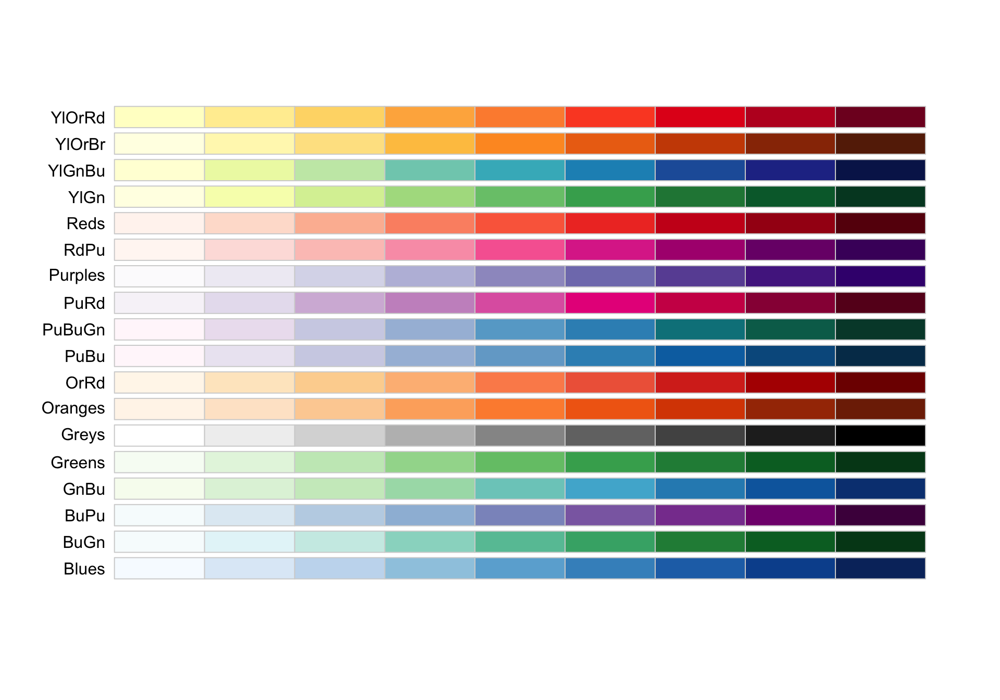
Diverging
Use to encode numerical information with critical midpoint
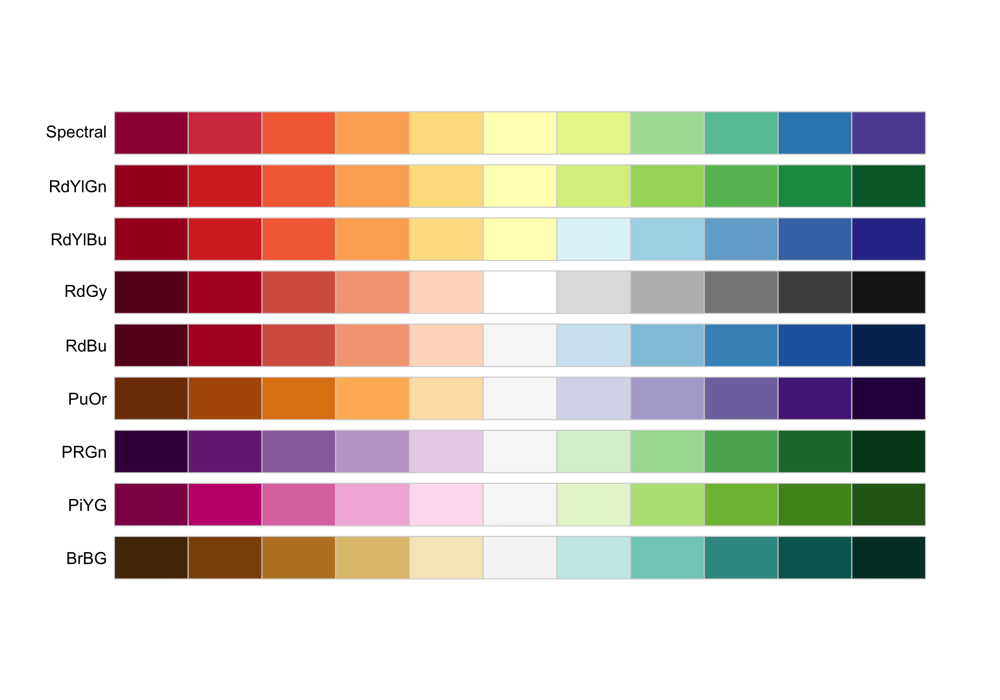
Qualitative
Use to encode categorical information
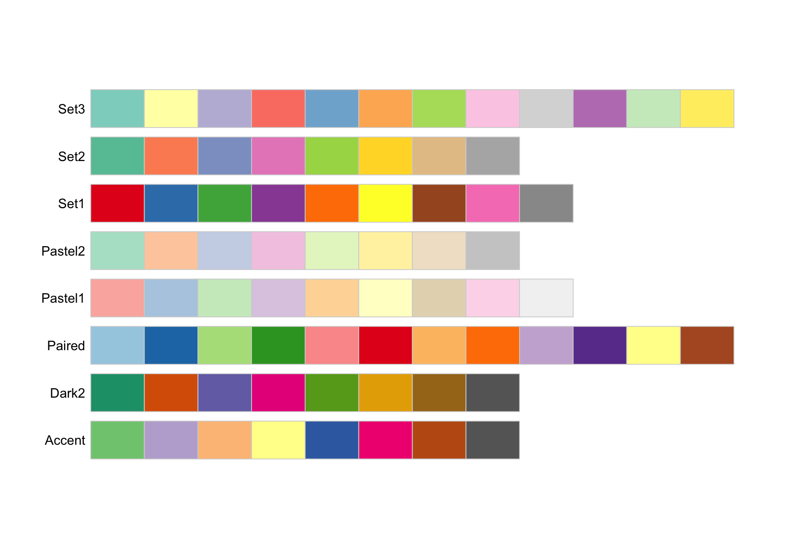
Color blindness
You may check whether the color scale works for people who can distinguish fewer colours than others with {colorBlindness}.
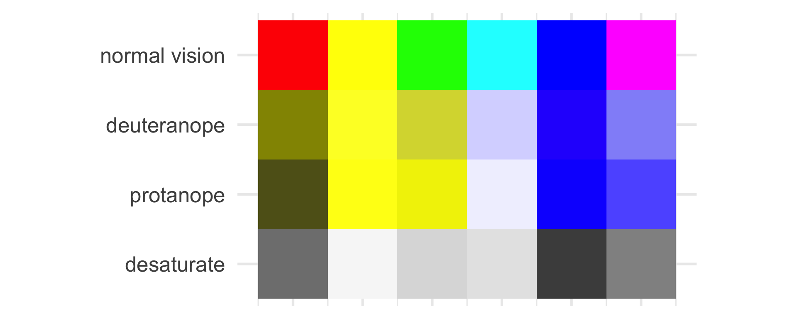
The viridis color scale is discriminable under the most common forms of colour blindness, and reproduces well in greyscale.
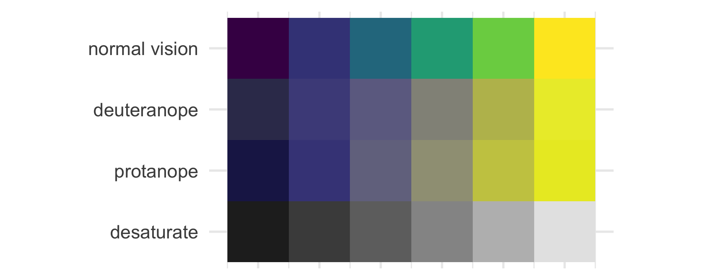
Fancy palettes
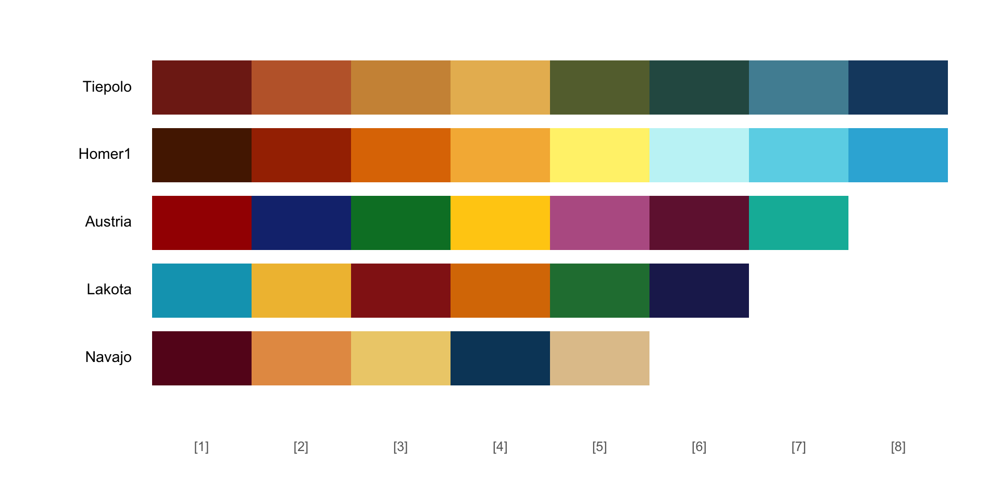
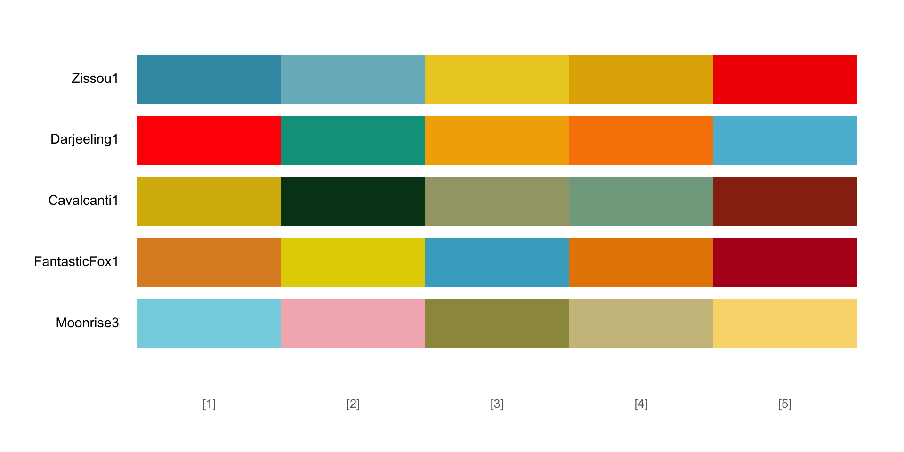
Color scales in {ggplot}
scale_color_*
scale_fill_*
Continuous:
- continuous(type)
- distiller(palette)
- gradient(high, low)
- gradient2(high, mid, low)
- gradientn(colours)
- viridis_c(option)
Discrete:
- manual(values)
- brewer(palette)
- grey(start, end)
- viridis_d(option)
Bibliography
Agnello, Luca/Sousa, Ricardo M. (2014). How Does Fiscal Consolidation Impact on Income Inequality? Review of Income and Wealth, 60(4), 702–726. DOI: 10.1111/roiw.12004
Anderesen, Asger Lau/Johannesen, Niels/Jørgensen, Mia/Peydró, José-Luis (2023). Monetary Policy and Inequality. The Journal of Finance, 78(5), 2945–2989. DOI: 10.1111/jofi.13262
Ball, Laurence/Furceri, Davide/Leigh, Daniel/Loungani, Prakash (2013). The distributional effects of fiscal consolidation (Working Paper No. WP/13/151). IMF.
Çerçil, İrfan/Aksaray, Gorkem (2025). Monetary Policy and Inequality: Distributional Effects of Asset Purchase Programs. Journal of International Money and Finance, 157, 103384. DOI: 10.1016/j.jimonfin.2025.103384
Coibion, Olivier/Gorodnichenko, Yuriy/Kueng, Lorenz/Silvia, John (2017). Innocent Bystanders? Monetary Policy and Inequality. Journal of Monetary Economics, 88, 70–89. DOI: 10.1016/j.jmoneco.2017.05.005
Doko Tchatoka, Firmin/Haque, Qazi (2024). Revisiting the Macroeconomic Effects of Monetary Policy Shocks. Economic Record, 100(329), 234–259. DOI: 10.1111/1475-4932.12801
Furceri, Davide/Loungani, Prakash/Zdzienicka, Aleksandra (2018). The Effects of Monetary Policy Shocks on Inequality. Journal of International Money and Finance, 85, 168–186. DOI: 10.1016/j.jimonfin.2017.11.004
Heimberger, Philipp (2020). The Dynamic Effects of Fiscal Consolidation Episodes on Income Inequality: Evidence for 17 OECD Countries over 19782013. Empirica, 47(1), 53–81. DOI: 10.1007/s10663-018-9404-z
Jordà, Òscar (2005). Estimation and Inference of Impulse Responses by Local Projections. American Economic Review, 95(1), 161–182. DOI: 10.1257/0002828053828518
Koukouridis, Athanasios (2025). Bank Profitability in Times of Quantitative Easing: The Role of Central Bank Transparency. Economies, 13(6), 161. DOI: 10.3390/economies13060161
McKay, Alisdair/Wolf, Christian K. (2023). Monetary Policy and Inequality. Journal of Economic Perspectives, 37(1), 121–144. DOI: 10.1257/jep.37.1.121
Miranda-Agrippino, Silvia/Ricco, Giovanni (2021). The Transmission of Monetary Policy Shocks. American Economic Journal: Macroeconomics, 13(3), 74–107. DOI: 10.1257/mac.20180124
Mumtaz, Haroon/Theophilopoulou, Angeliki (2017). The Impact of Monetary Policy on Inequality in the UK. An Empirical Analysis. European Economic Review, 98, 410–423. DOI: 10.1016/j.euroecorev.2017.07.008
Scherer, Cédric (2022). Graphic Design with Ggplot2. https://rstudio-conf-2022.github.io/ggplot2-graphic-design/
Woo, Jaejoon/Bova, Elva/Kinda, Tidiane/Zhang, Y. Sophia (2016). Distributional Consequences of Fiscal Adjustments: What Do the Data Say? IMF Economic Review, 65(2), 273–307. DOI: 10.1057/s41308-016-0021-1

PI 0588 Economic Policy (Applied track) | Winter term 2026